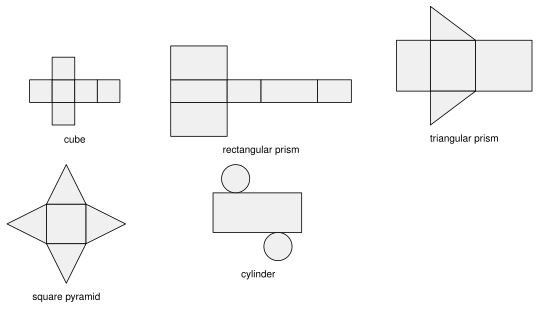
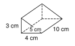
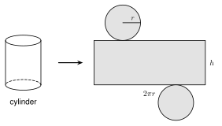
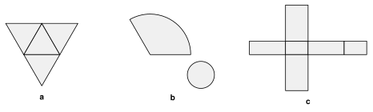
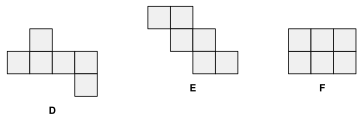

8.3 - Surface Area and Nets
Lucía wraps a gift box. She cuts wrapping paper that covers every side of the box, and nothing more. Paper that is too small leaves a gap. Paper that is too big is wasted.
The amount of paper is the surface area of the box. In this lesson you unfold solids into flat patterns, and you find the surface area of prisms, cylinders, pyramids, cones, and spheres.
Printable Guided Notes for this lesson (fill-in notes to print and write on)
🔥 Warm Up
Find the area of a rectangle \(9\) in by \(4\) in, and of a triangle with base \(6\) ft and height \(5\) ft.
Find the circumference of a circle with radius \(3\). Give the exact answer.
A right triangle has legs \(5\) and \(12\). Find the hypotenuse.
👥 Learn Together
8.3.1 - Nets
A net is a solid cut open and laid flat. Every face shows. If you fold the net, you get the solid back.

Surface area is the area of the net. Add the areas of all the pieces.
Example 1: Does the net fold into a cube?
A cube has \(6\) faces. All three nets have \(6\) squares, but they do not all fold into a cube.
- A folds into a cube. Four squares make a band around the cube. One square is the top and one is the bottom.
- B does not fold into a cube. Four squares make a band. The two extra squares are both on the top side. They land on the same face, and the bottom face is empty.
- C folds into a cube. One extra square is the top and the other is the bottom.
A triangular prism. The triangles are the two bases. The rectangles are the sides.
8.3.2 - Prisms
The surface area of a prism has two parts.
- The lateral area \(L\) is the area of the sides (the rectangles). Unrolled, the sides make one big rectangle with width \(P\) (the perimeter of the base) and height \(h\). So \(L = Ph\).
- The two bases each have area \(B\).
\(SA = L + 2B = Ph + 2B\)
For a box, you can also add the area of the three different faces and double it.
Example 2: A box
Find the surface area of the box. It is \(8\) in long, \(5\) in wide, and \(3\) in tall.
Three pairs of faces:
- top and bottom: \(2(8 \cdot 5) = 80\)
- front and back: \(2(8 \cdot 3) = 48\)
- left and right: \(2(5 \cdot 3) = 30\)
\[ SA = 80 + 48 + 30 = 158 \text{ square inches} \]
\(2(9 \cdot 6) + 2(9 \cdot 4) + 2(6 \cdot 4) = 108 + 72 + 48 = 228\) square inches.
Example 3: A triangular prism

The bases are right triangles with sides \(3\), \(4\), and \(5\) cm. The prism is \(10\) cm long. Find the surface area.
Base area: \(B = \frac{1}{2}(4)(3) = 6\).
Base perimeter: \(P = 3 + 4 + 5 = 12\).
Lateral area: \(L = Ph = 12 \cdot 10 = 120\).
\[ SA = L + 2B = 120 + 2(6) = 132 \text{ square centimeters} \]
\(B = \frac{1}{2}(12)(5) = 30\). \(P = 5 + 12 + 13 = 30\). \(L = 30 \cdot 8 = 240\).
\(SA = 240 + 2(30) = 300\) square centimeters.
8.3.3 - Cylinders
Take the label off a can. Lay it flat. It is a rectangle. Its width is the distance around the can, \(2\pi r\). Its height is the height of the can, \(h\).

The lateral area is \(2\pi r h\). The two circles each have area \(\pi r^2\).
\(SA = 2\pi r^2 + 2\pi r h\)
Example 4: A cylinder

Find the surface area of a cylinder with \(r = 3\) ft and \(h = 8\) ft. Give the exact answer and a decimal rounded to the nearest tenth.
\[ SA = 2\pi(3)^2 + 2\pi(3)(8) = 18\pi + 48\pi = 66\pi \approx 207.3 \text{ square feet} \]
\(SA = 2\pi(4)^2 + 2\pi(4)(11) = 32\pi + 88\pi = 120\pi \approx 377.0\) square inches.
Example 5: Paint for a tank
A closed water tank has radius \(10\) ft and height \(12\) ft. One gallon of paint covers \(350\) square feet. How many whole gallons does Samir need to paint the whole outside? Round the surface area to the nearest tenth.
\[ SA = 2\pi(10)^2 + 2\pi(10)(12) = 200\pi + 240\pi = 440\pi \approx 1382.3 \text{ square feet} \]
\[ 1382.3 \div 350 \approx 3.95 \]
He needs \(4\) gallons. (He cannot buy \(0.95\) of a gallon more than he needs, so round up.)
Label \(= 2\pi r h = 2\pi(4)(12) = 96\pi \approx 301.6\) square centimeters.
8.3.4 - Pyramids, Cones, and Spheres
The slant height \(\ell\) is measured along a slanted face. In a pyramid, it goes from the middle of a base edge up to the apex. In a cone, it goes from the edge of the base up to the apex.
The slant height, the height, and half of the base make a right triangle. Use the Pythagorean theorem to find any missing side.
Regular pyramid: \(SA = B + \frac{1}{2}P\ell\)
Cone: \(SA = \pi r^2 + \pi r \ell\)
Sphere: \(SA = 4\pi r^2\)
The triangle faces of a regular pyramid each have base (one edge) and height \(\ell\). All the faces together have area \(\frac{1}{2}P\ell\).
Example 6: A square pyramid with the slant height given

The base is a square with side \(6\) ft. The slant height is \(5\) ft. Find the surface area.
\(B = 6 \cdot 6 = 36\). \(P = 4 \cdot 6 = 24\).
\[ SA = B + \tfrac{1}{2}P\ell = 36 + \tfrac{1}{2}(24)(5) = 36 + 60 = 96 \text{ square feet} \]
\(B = 100\). \(P = 40\). \(SA = 100 + \frac{1}{2}(40)(8) = 100 + 160 = 260\) square feet.
Example 7: A square pyramid with the height given

The base is a square with side \(10\) in. The height is \(12\) in. Find the surface area.
First find the slant height. Half the base is \(5\). The right triangle has legs \(5\) and \(12\):
\[ \ell^2 = 5^2 + 12^2 = 169, \quad \ell = 13 \]
\(B = 100\) and \(P = 40\).
\[ SA = 100 + \tfrac{1}{2}(40)(13) = 100 + 260 = 360 \text{ square inches} \]
Half the base is \(6\). \(\ell^2 = 6^2 + 8^2 = 100\), so \(\ell = 10\).
\(SA = 144 + \frac{1}{2}(48)(10) = 144 + 240 = 384\) square inches.
Example 8: A cone
A cone has radius \(4\) in and height \(3\) in. Find the surface area. Give the exact answer and a decimal rounded to the nearest tenth.
Find the slant height: \(\ell^2 = 4^2 + 3^2 = 25\), so \(\ell = 5\).
\[ SA = \pi r^2 + \pi r \ell = \pi(4)^2 + \pi(4)(5) = 16\pi + 20\pi = 36\pi \approx 113.1 \text{ square inches} \]
\(\ell^2 = 81 + 144 = 225\), so \(\ell = 15\).
\(SA = \pi(81) + \pi(9)(15) = 81\pi + 135\pi = 216\pi \approx 678.6\) square centimeters.
Example 9: Find the mistake
Kofi finds the surface area of the cone in Example 8. He writes \(SA = \pi(4)^2 + \pi(4)(3) = 28\pi\). What is his mistake?
He used the height \(3\) in the formula. The formula needs the slant height \(\ell = 5\). The correct answer is \(36\pi\).
Example 10: A sphere
A basketball has radius \(12\) cm. Find the area of its surface. Give the exact answer and a decimal rounded to the nearest tenth.
\[ SA = 4\pi r^2 = 4\pi(12)^2 = 576\pi \approx 1809.6 \text{ square centimeters} \]
\(SA = 4\pi(11)^2 = 484\pi \approx 1520.5\) square centimeters.
Peel an orange. Press the peel flat. It covers about \(4\) circles that have the same radius as the orange. One circle has area \(\pi r^2\), so the peel has area \(4\pi r^2\).
✍️ Practice On Your Own
Nets.

- Name the solid that each net folds into: a, b, and c.

Which of the nets D, E, and F fold into a cube? Explain what is wrong with the other one.
A net is two circles and one rectangle. The circles have radius \(3\) in. How long is the rectangle? Give the exact answer and a decimal rounded to the nearest tenth.
Prisms.
Find the surface area of a box that is \(10\) cm by \(6\) cm by \(4\) cm.
Find the surface area of a cube with edge \(7.5\) in.
The bases of a prism are right triangles with sides \(6\), \(8\), and \(10\) ft. The prism is \(15\) ft long. Find the surface area.
A rectangular prism has a base \(12\) in by \(5\) in and a height of \(9\) in. Find the lateral area.
Lucía wraps a gift box that is \(14\) in by \(10\) in by \(6\) in. She buys \(10\%\) more paper than the surface area, to allow for overlap. How much paper does she buy? Round to the nearest square inch.
A box has a base \(6\) ft by \(4\) ft and a surface area of \(148\) square feet. Find its height.
Find the mistake. Moses says the surface area of a box \(5\) ft by \(3\) ft by \(2\) ft is \(5 \cdot 3 \cdot 2 = 30\) square feet. What did he find, and what is the correct surface area?
Cylinders.
Find the surface area of a cylinder with \(r = 5\) in and \(h = 9\) in. Give the exact answer and a decimal rounded to the nearest tenth.
A soup can has radius \(3.4\) cm and height \(10\) cm. Find the area of its label (the side only). Give the exact answer and a decimal rounded to the nearest tenth.
A closed tank has radius \(6\) ft and height \(15\) ft. One gallon of paint covers \(300\) square feet. How many whole gallons are needed to paint the whole outside?
A cylinder with radius \(4\) m has a surface area of \(96\pi\) square meters. Find its height.
Pyramids, cones, and spheres.
A square pyramid has base side \(8\) in and slant height \(7\) in. Find the surface area.
A square pyramid has base side \(16\) cm and height \(15\) cm. Find the slant height and the surface area.
A cone has radius \(3\) ft and slant height \(7\) ft. Find the surface area. Give the exact answer and a decimal rounded to the nearest tenth.
A cone has radius \(8\) cm and height \(15\) cm. Find the surface area. Give the exact answer and a decimal rounded to the nearest tenth.
The triangle with vertices \((0, 0)\), \((6, 0)\), and \((0, 8)\) spins around the \(y\)-axis. Find the surface area of the cone. Give the exact answer and a decimal rounded to the nearest tenth.
Find the mistake. Ana says a cone with \(r = 5\) and \(h = 12\) has \(SA = \pi(5)^2 + \pi(5)(12) = 85\pi\). Find the correct surface area.
A tent is a cone with no floor. The radius is \(7\) ft and the height is \(24\) ft. How much fabric does it use? Give the exact answer and a decimal rounded to the nearest tenth.
A sphere has radius \(9\) in. Find its surface area. Give the exact answer and a decimal rounded to the nearest tenth.
A sphere has surface area \(100\pi\) square centimeters. Find its radius.
A dome is half a sphere with radius \(12\) ft. It has no floor. Find the area of the curved surface. Give the exact answer and a decimal rounded to the nearest tenth.
Test practice
A cylinder has radius \(5\) in and height \(10\) in. What is its surface area, rounded to the nearest tenth?
A. 314.2 square inches
B. 471.2 square inches
C. 785.4 square inches
D. 942.5 square inchesA cube has a surface area of \(150\) square inches. What is the length of one edge?
A. 5 in
B. 6.5 in
C. 25 in
D. 50 in
Challenge
A box is \(2\) by \(3\) by \(4\). Find its surface area. Then double every length and find the new surface area. How many times larger is it?
The side of a cone unrolls into part of a circle with radius \(\ell\) and arc length \(2\pi r\). A cone has \(r = 3\) and \(\ell = 9\). What fraction of a full circle with radius \(9\) is the unrolled side? What is the angle of that piece?